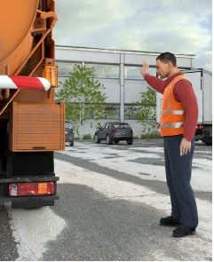
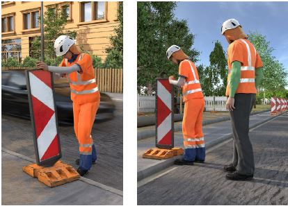
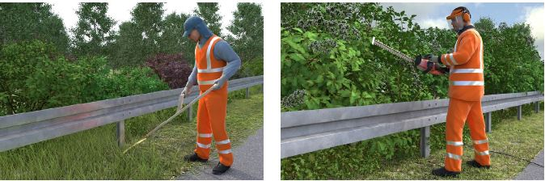

Für Personen, die beim Bau, der Unterhaltung oder Reinigung der Straßen und Anlagen im Straßenraum eingesetzt sind oder in deren Raum befindliche Anlagen zu beaufsichtigen haben oder bei der Abfallsammlung tätig sind, wird gefordert, dass bei der Arbeit außerhalb von Gehwegen und Absperrungen auffällige Warnkleidung zu tragen ist (§ 35 Abs. 6 StVO in Verbindung mit der Verwaltungsvorschrift (VwV) zu § 35 Abs. 6). Gemäß den Richtlinien für die Sicherung von Arbeitsstellen an Straßen (RSA 95, Ziffer 8 Abs. 1) trifft das auch auf Personen zu, die bei den vorgenannten Arbeiten neben dem Verkehrsbereich tätig werden und nicht durch eine geschlossene Absperrung (z. B. Absperrschranken oder Bauzäune) von diesem getrennt sind. Weiterhin weist die RSA insbesondere für Nachtbaustellen auf die Notwendigkeit vertikaler Reflexstreifen in Körperkontur bei Warnkleidung hin (Anhang 11 Verkehrsblatt).
Zur Auswahl der Warnkleidung ist im Rahmen der Gefährdungsbeurteilung die Erkennbarkeit der Warnkleidung unter Berücksichtigung der auszuführenden Tätigkeiten, Körperhaltungen und Umgebungsbedingungen zu bewerten (siehe auch Kapitel 4.3., 4.4., 4.5.).
Die Entscheidung, welche Ausführungsform der Warnkleidung zum Einsatz kommt, kann nur im Einzelfall auf der Grundlage der Gefährdungsbeurteilung und der Beurteilung der Art und Größe der Risiken sowie der betrieblichen Beanspruchung (Tätigkeit, Einsatzbereich, Tragedauer) getroffen werden.
Entsprechend dem Ergebnis der Gefährdungsbeurteilung ist Warnkleidung so auszuwählen, dass insgesamt die Klasse 2 oder 3 erreicht wird.
Die DIN EN ISO 20471 unterscheidet in passive und aktive Verkehrsteilnehmende. Aktive Verkehrsteilnehmende sind Personen auf der Straße, die am Straßenverkehr teilnehmen und die ihre Aufmerksamkeit auf den Straßenverkehr gerichtet haben. Passive Verkehrsteilnehmende sind dagegen Personen auf der Straße, die nicht am Fahrzeugverkehr teilnehmen und die ihre Aufmerksamkeit nicht auf den Straßenverkehr gerichtet haben, z. B. Tätigkeiten beim Verkehrswegebau oder im Straßenbetriebsdienst ausführen oder mit Be- und Entladearbeiten beschäftigt sind.
Bei erhöhter Gefährdung ist Warnkleidung der Klasse 3 einzusetzen. Erhöhte Gefährdung liegt z. B. vor, wenn mindestens eine der folgenden Situationen zutrifft:
Je größer die Gefährdung durch die Geschwindigkeit des vorbeifließenden Verkehrs, die Höhe der Verkehrsbelastung, die Häufigkeit des Betretens des Straßenraumes, die Einschränkung der Beobachtungsmöglichkeit des Verkehrs und wenn Arbeiten in einer nicht nach RSA gesicherten Baustelle durchzuführen sind, desto auffälliger, das heißt desto großflächiger muss die Warnkleidung sein. |
Daher: Wird im Rahmen der Gefährdungsbeurteilung für die geplanten Tätigkeiten ermittelt, dass „erhöhte Gefährdung“ für die Versicherten vorliegt, ist Warnkleidung der Klasse 3 einzusetzen (siehe Kapitel 5.2).
Von Warnkleidung der Klasse 3 kann abgewichen werden und Klasse 2 eingesetzt werden, wenn einfache Gefährdung im Straßenverkehr vorliegt.
Einfache Gefährdung bedeutet:
Bei einfacher Gefährdung oder in Notsituationen (z. B. Fahrzeugpanne) ist mindestens Warnkleidung der Klasse 2 einzusetzen.
Die Warnwirkung der Warnkleidung ist außerdem bei den geplanten typischen Arbeitshaltungen zu gewährleisten. Es ist darauf zu achten, dass die relevanten retroreflektierenden Streifen und das fluoreszierende Hintergrundmaterial durch ein Arbeitsgerät nicht verdeckt werden und die Warnwirkung auch bei allen Sicht- und Witterungsverhältnissen gewährleistet bleibt.
Im Sommer und Winter herrschen unterschiedliche klimatische Verhältnisse, so dass die Versicherten durch Wechsel von Kleidungsteilen auf die Temperaturen reagieren. In der Tabelle 3 sind daher Auswahlbeispiele für die Kombinationsmöglichkeiten von Bekleidungsstücken dargestellt, die sich in der Praxis bewährt haben und gleichzeitig die richtigen Bekleidungsklassen entsprechend der ermittelten Gefährdungen darstellen.
Bei kleinen Größen (S, XS) ist darauf zu achten, dass die geforderte Warnkleidungsklasse bei Kombinationen von Kleidungsstücken erreicht wird, da ein T-Shirt oder eine Jacke in S und XS i. d. R. die Warnkleidungsklasse 3 nicht erreicht.
Tabelle 3: Beispiele für Kombinationen von Bekleidungsstücken
| warm (sommerliche Temperaturen) | kalt (winterliche Temperaturen) | |
| Einfache Gefährdung: Warnkleidung Klasse 2 | mindestens A oder B oder C1. C2 oder C3 allein sind nicht ausreichend! | Mindestens D2 (ggf. mit C1, C2 oder C3) oder A über warmer Kleidung, C2 oder C3 allein sind nicht ausreichend! |
| Erhöhte Gefährdung: Warnkleidung Klasse 3 erforderlich | mindestens (A oder B) zusammen mit C1, C2 oder C3 (ganzer Körper wird mit Warnkleidung bedeckt). | Empfehlenswert ist D1 mit C1, C2 oder C3, mindestens jedoch D1. |
Latzhosen nach DIN EN ISO 20471 weisen z. B. drei Streifen von 50 mm Breite oder zwei Streifen von 70 mm Breite auf, um die Klasse 2 zu erreichen, die bei einfacher Gefährdung mindestens notwendig ist. Vor allem bei Dunkelheit sollte aber auch ein Bauchstreifen zur besseren Erkennbarkeit vorhanden sein. Latzhosen mit nur zwei Beinstreifen von 50 mm Breite können nach der DIN EN ISO 20471 nur die Klasse 1 erreichen und sind damit im öffentlichen Straßenverkehr als alleinige Warnkleidung nicht ausreichend. Latzhosen, die nach der alten DIN EN 471 zu Klasse 2 zertifiziert wurden, können aber noch weiterverwendet werden, bis sie die Ablegereife erreicht haben.
Eine Rundbundhose bietet nur dann ausreichende Sicherheit, wenn sie in Verbindung mit Warnkleidung für den Oberkörper getragen wird, da die Bestreifung bei der Rundbundhose am unteren Hosenbein durch Tätigkeiten schnell verdeckt werden kann. Bei einer Latzhose oder einer Rundbundhose sind daher drei Streifen reflektierendes Material am Hosenbein empfehlenswert.
Die Design-Beispiele können in der Praxis anders aussehen. Im jeweiligen Etikett steht die Warnkleidungsklasse neben dem Piktogramm.
|
 |
 |
Abb. 13 Einfache Gefährdung, Warnweste A, Warnkleidung Klasse 2 |
Abb. 14a und b Einfache Gefährdung: Rundbundhose C3 in Kombination mit T-Shirt B oder nur T-Shirt B, Straßenverkehr im Baustellenbereich 30 km/h, mindestens Warnkleidungsklasse 2 |

Abb. 15 Erhöhte Gefährdung, Warnkleidung Klasse 3, a: Latzhose oder Rundbundhose mit Warnweste A, b: Rundbundhose oder Latzhose mit Jacke D